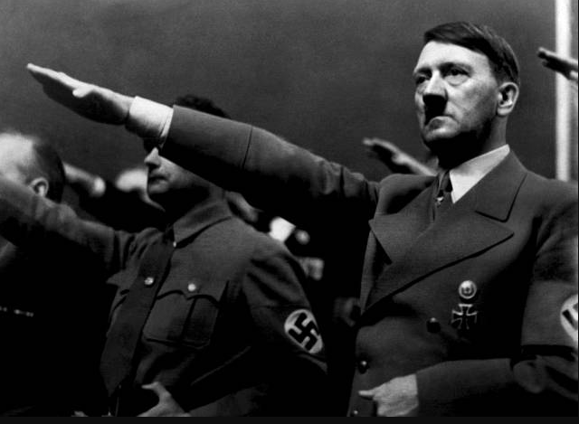

HITLER IS BACK
HELLO EVERY BODY
HITLER IS BACK

I-Adolf Hitler
is a German ideologue and statesman, born April 20, 1889 in Braunau am Inn in Austria-Hungary (today in Austria and still a border town with Germany) and died by suicide on April 30, 1945 in Berlin. Founder and central figure of Nazism, he took power in Germany in 1933 and established a totalitarian, imperialist, anti-Semitic, racist and xenophobic dictatorship known as the Third Reich.
Established in Vienna then in Munich, he tried in vain to become an artist, self-taught since he failed at the Beaux-Arts. Although he tried to evade his military obligations, he participated in the First World War with the Bavarian troops. After the war, he returned to Munich where he led a fairly wait-and-see life in these troubled times, before joining the National Socialist German Workers' Party (NSDAP, the Nazi party), created in 1920. He established himself through his talents as an orator at the head of the movement in 1921 and attempted a coup d'état in 1923 which failed. He used his short prison sentence to write the book Mein Kampf in which he exposed his racist and ultranationalist views.
In the 1920s, in a climate of political violence, he occupied a growing place with the Nazi party in German public life, running for president against Hindenburg and becoming chancellor on January 30, 1933, during the Great Depression. His regime very quickly set up the first concentration camps intended for the repression of political opponents (notably socialists, communists and trade unionists). In August 1934, after a violent operation to physically eliminate opponents and rivals - known as the Night of the Long Knives - and the death of old Marshal Hindenburg, President of the Reich, he was elected head of state. He therefore bears the dual title of “Führer” (guide) and “Reich Chancellor”, thus scuttling the Weimar Republic and putting an end to the first parliamentary democracy in Germany. The policy he pursues is pan-Germanist, anti-Semitic, revanchist and bellicose. His regime adopted anti-Jewish legislation in 1935 and the Nazis took control of German society (workers, youth, media and cinema, military industry, sciences, etc.).
The regime's expansionism led Germany to invade Poland in 1939, generating the European part of the Second World War. Germany first experienced a period of military victories and occupied most of Europe, but was then pushed back on all fronts, then invaded by the Allies: in the East by the Soviets, in the West by the Anglo-Americans and their allies, including forces from countries occupied by Germany. At the end of a total war having reached heights of destruction and barbarism, Hitler, holed up in his bunker in Berlin, commits suicide while the capital of the Reich in ruins is invested by Soviet troops.
The Third Reich, which Hitler said would last "a thousand years", lasted only twelve but caused the deaths of tens of millions of people and the destruction of much of Europe's cities and infrastructure. The unprecedented scale of the massacres — committed by the Einsatzgruppen and then in mass extermination centers — such as the genocide of European Jews and Gypsies, the starvation of millions of Soviet civilians or the assassination of disabled people, to which are added the countless abuses against civilian populations, the inhumane treatment of Soviet prisoners of war or even the destruction and pillaging for which he is responsible, as well as the radical racism singling out his doctrine and the barbarity of the abuse inflicted on his victims, caused Hitler to be judged in a particularly negative way by historiography and collective memory. His person and his name are considered symbols of absolute evil.